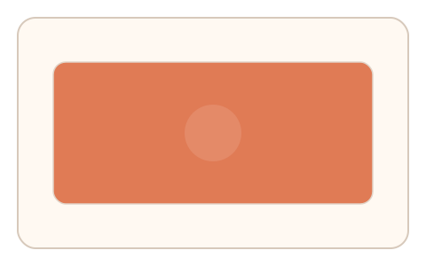
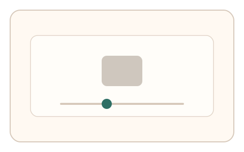
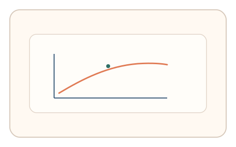

#35
视觉思考范式：时域/适应/残影
已扩展
色彩适应回弹
凝视强烈色块后调节灰阶中性点，以补偿方向与幅度验证色彩适应特征。
概念原文
让用户凝视强烈色块后切到灰阶，要求调节滑杆使“灰看起来中性”。记录补偿方向与幅度。
使用色彩适应带来的主观偏移作为信号。
研究背景
色彩适应会导致中性色产生偏色错觉，且补偿方向与幅度存在稳定分布。通过测量用户对灰阶中性点的主观校准，可获得难以伪造的感知信号。
核心机制
- 呈现强烈色块进行短时适应。
- 切换至灰阶目标并提供色相滑杆。
- 用户调节到“看起来中性”的灰。
- 记录补偿方向、幅度与收敛过程。
用户流程
- 步骤 1：用户凝视高饱和色块。
- 步骤 2：画面切换到灰阶并开始调节。
- 步骤 3：系统记录补偿幅度并判定。
判定信号
补偿方向与幅度
色彩适应引发的偏色具有可预测方向。
调节收敛速度与回撤次数
真实校准通常表现为逐步收敛。
判定逻辑
检查补偿方向与幅度是否落在适应强度对应区间，并结合收敛曲线；固定值或一次到位判异常。
对抗面
- 脚本直接提交固定补偿值
- 重放真实用户的调节序列
防御与缓解
- 随机化色块颜色与适应时长
- 加入轻微背景纹理与亮度变化
- 叠加微时序与鼠标轨迹信号进行多信号判定
可达性与风险
提供低饱和或替代任务模式，避免对色觉异常用户造成不公平负担。
- 色觉差异导致阈值偏移
- 显示设备色彩校准差异影响结果
可视化状态

状态 1：色块适应
高饱和色块进行短时适应。

状态 2：灰阶调节
用户调节灰阶至中性。

状态 3：回弹判定
分析补偿方向与幅度。
参考资料
Color adaptation
说明色彩适应与中性点偏移。
Afterimage
说明适应后的色彩残影效应。